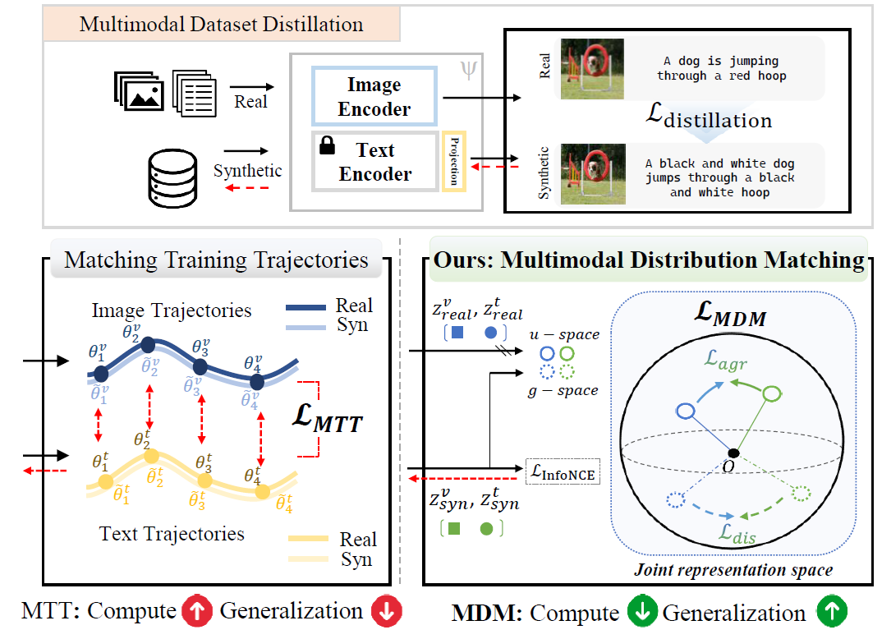
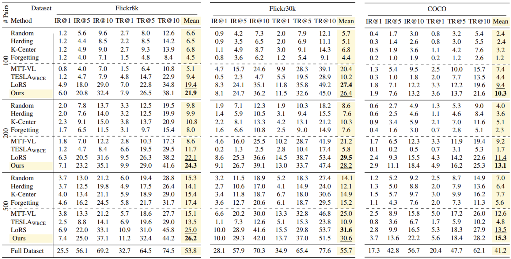
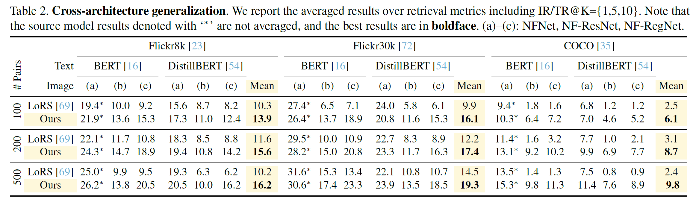
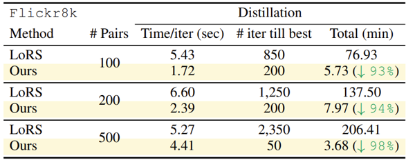
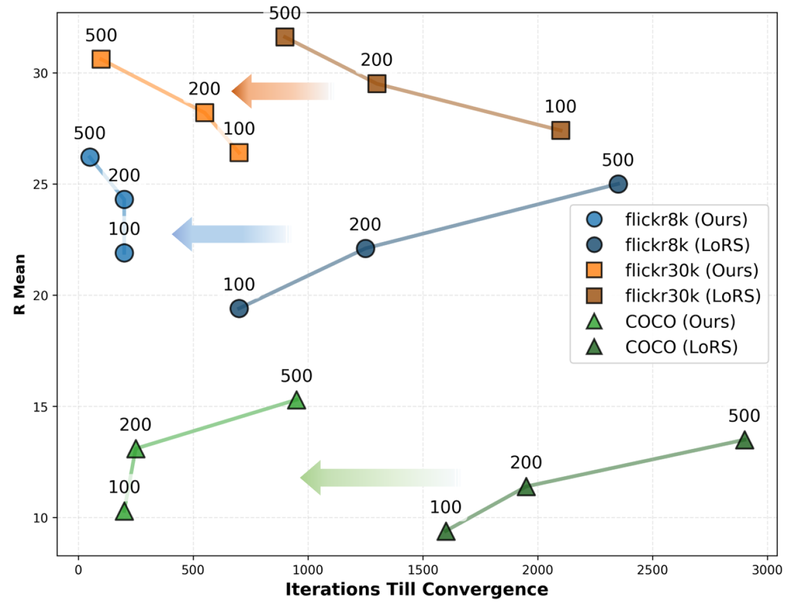
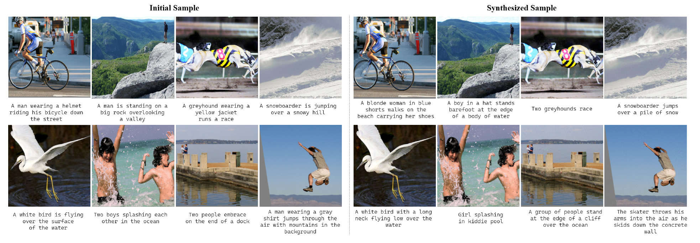
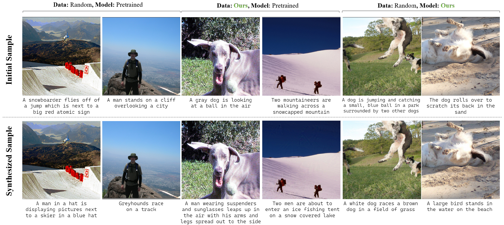

CVPR 2026
Dataset distillation compresses large training sets into compact synthetic datasets while preserving downstream performance. As modern systems increasingly operate on paired vision–language inputs, multimodal distillation must preserve representation quality and cross-modal alignment under tight compute and memory budgets, yet prior methods often require heavy computes and overlook their correlations.
To address this, we present Multimodal Distribution Matching (MDM), a geometry-aware framework for efficient and generalizable multimodal distillation. Specifically, MDM integrates complementary components at the data, model, and loss levels. At the data level, it initializes synthetic image–text pairs by sampling from clusters in the joint embedding space. At the model level, it forms a mixed teacher by interpolating independently fine-tuned models in weight space according to their angular deviation from the pretrained anchor. At the loss level, it matches joint distributions on the unit hypersphere using a geometry-aware matching objective that exploits the joint features in the cross-modal agreement and discrepancy directions along with symmetric contrastive learning.
Across image–text retrieval benchmarks with cross-architecture evaluation, MDM yields compact synthetic sets that preserve multimodal semantics, substantially reduce distillation cost, and remain robust across architectures.

Figure: Comparison between trajectory matching (MTT) and our distribution matching (MDM). MDM directly matches joint distributions in the embedding space, reducing compute and improving generalization.
MDM replaces trajectory and similarity-matrix supervision with distribution matching on the unit hypersphere. Unlike prior methods that replay training trajectories or distill similarity matrices---which require heavy computation and tend to bias optimization toward projection subspaces tied to specific encoder architectures---our approach directly matches the joint distributions of real and synthetic data. We exploit both agreement and discrepancy features between image and text embeddings on the hypersphere, thereby addressing scalability and cross-architecture generalization with significantly lower compute than trajectory-based methods such as MTT-VL and LoRS.
Joint-space initialization: We embed all real pairs, run K-means clustering with K = |Dsyn|, and for each cluster select the real sample whose joint feature is closest to its centroid. This induces broad coverage of joint semantic modes. Because the joint embedding concatenates image and text features, clustering reflects multimodal structure---providing stronger initialization for distillation.
Adaptive model initialization: Beyond data initialization, the image–text model's initialization is crucial. If the model remains too close to the pretrained anchor, the teacher may underfit the real multimodal structure. Conversely, leaning too heavily on a single finetuned expert causes synthetic data to inherit that expert's model-specific geometry. We therefore merge the model by interpolating N finetuned experts in weight space according to their angular deviation from the pretrained anchor---yielding architecture-agnostic supervision that adapts only when expert directions align.
Geodesic kernel energy: Given normalized embeddings (zv, zt) on the unit hypersphere Sd−1, we construct agreement vectors \(u = \text{normalize}(z_v + z_t)\) and discrepancy vectors \(g = \text{normalize}(z_v - z_t)\), where \(\text{normalize}(\cdot) := \cdot/\|\cdot\|_2\). We compute angular distance \(\phi(a,b) = \arccos(\langle a, b \rangle) \in [0,\pi]\) and kernelize with a geodesic Gaussian kernel: \[ k_{\text{geo}}(a,b) = \exp\left(-\frac{\phi(a,b)^2}{2\sigma^2}\right), \quad \sigma > 0. \] For finite sets \(A = \{a_i\}_{i=1}^m\) and \(B = \{b_j\}_{j=1}^n\) on Sd−1, the geodesic kernel energy is \[ \text{GKE}(A,B) = \left[ \frac{1}{m^2}\sum_{i,i'} k_{\text{geo}}(a_i,a_{i'}) + \frac{1}{n^2}\sum_{j,j'} k_{\text{geo}}(b_j,b_{j'}) - \frac{2}{mn}\sum_{i,j} k_{\text{geo}}(a_i,b_j) \right]^{1/2}. \] For each mini-batch, we construct batch sets \(U_r = \{u^r_i\}_{i=1}^{B_r}\), \(U_s = \{u^s_j\}_{j=1}^{B_s}\), \(G_r = \{g^r_i\}_{i=1}^{B_r}\), and \(G_s = \{g^s_j\}_{j=1}^{B_s}\), where \(r\) denotes the real set and \(s\) the synthetic set. We minimize \(\mathcal{L}_{\text{agr}} = \text{GKE}(U_r, U_s)\) and \(\mathcal{L}_{\text{dis}} = \text{GKE}(G_r, G_s)\), combined with InfoNCE for image–text alignment: \[ \mathcal{L}_{\text{MDM}} = \mathcal{L}_{\text{InfoNCE}} + \lambda_{\text{agr}} \mathcal{L}_{\text{agr}} + \lambda_{\text{dis}} \mathcal{L}_{\text{dis}}. \]
Image-text retrieval results for 100, 200, and 500 synthetic pairs on Flickr8k, Flickr30k, and COCO. Best and runner-up in bold and underline.

Table: Image-text retrieval results for 100, 200, and 500 synthetic pairs using the coreset methods and distillation method. The condensation rate for {Flickr8k, Flickr30k, and COCO} datasets are approximately {1.7%, 0.3%, 0.8‰}, {3.3%, 0.7%, 1.7‰}, {8.3%, 1.7%, 4.4‰} for 100, 200, and 500 pairs. Best and runner-up results are indicated in boldface and underline, respectively.
Averaged results over IR/TR@K={1,5,10}. MDM achieves higher mean performance than LoRS across NFNet, NF-ResNet, NF-RegNet with BERT/DistilBERT.

Table: Cross-architecture generalization. We report the averaged results over retrieval metrics including IR/TR@K={1,5,10}. Note that the source model results denoted with '∗' are not averaged, and the best results are in boldface.

Table: Compute statistics for different # of data pairs.

Figure: Performance curve across datasets and data pairs. Ours consistently achieves higher performance at remarkably smaller iterations than the baseline.

Figure: Qualitative results of synthesized data. We compare the initial (left) and distilled samples (right).

Figure: Qualitative comparisons for the ablation studies with different data and model initializations.
@inproceedings{jeong2026mdm,
title={Multimodal Distribution Matching for Vision-Language Dataset Distillation},
author={Jeong, Jongoh and Kwon, Hoyong and Kim, Minseok and Yoon, Kuk-Jin},
booktitle={Proceedings of the IEEE/CVF Conference on Computer Vision and Pattern Recognition (CVPR)},
year={2026}
}